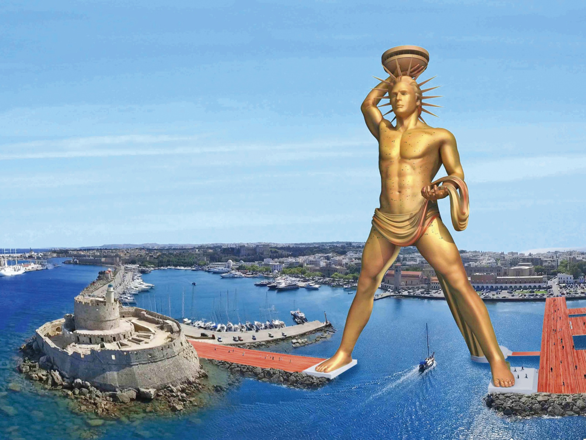

Jeden z siedmiu cudów budowli i dzieł sztuki, które wyróżnili Grecy. Został wykonany około 292-280 roku p.n.e., z brązu, przez Charesa z Lindos (ucznia sławnego rzeźbiarza greckiego Lizypa) w 292-280 roku przed Chr. Według opisów starożytnych, kolos (co pierwotnie w języku greckim znaczyło właśnie posąg) przedstawiał boga Heliosa w postawie wyprostowanej, odchylonego nieco do tyłu, wpatrującego się w dal.
WYGLĄD KOLOSA
Wykonany z brązu posąg miał ok. 32-36 m wysokości i ważył ok. 70 ton. Według opisów starożytnych kolos przedstawiał boga Heliosa w postawie wyprostowanej, odchylonego nieco do tyłu, wpatrującego się z natężeniem w dal i osłaniającego prawą dłonią oczy. Głowę jego zdobiła promienista korona. Całość stała na marmurowym postumencie. Niedawno uważano, że kolos stał z nogami rozstawionymi nad wejściem do portu. Dziś uważa się, że stał w mieście z twarzą zwróconą na wschód, czyli w stronę, z której Helios rozpoczyna przejażdżkę po niebie.
Atak Demetriosa
W 304r. przed Chr. król Demetrios wezwał mieszkańców Rodosu, aby stanęli z nim do walki przeciw egipskiemu władcy Ptolemeuszowi Soterowi. Mieszkańcy Rodosu nie chcieli wojny ze swoim głównym partnerem handlowym. Demetrios chciał przed atakiem na Aleksandrię zdobyć Rodos. Chociaż wysłał bardzo dużo wojsk Rodyjczycy powstrzymali natarcie. Demetrios kazał zbudować wieżę oblężniczą. Helepolis (niszczyciel miast) miał około 30 m wysokości. Wykonany był z drewna. Wyposażony był w katapulty, które mogły wyrzucać 60-kilogramowe kamienie na odległość kilkuset metrów. Żeby ruszyć tego kolosa trzeba było 3400 mężczyzn. Na wyższych piętrach byli łucznicy. Maszyna miała zwodzony most, a przed płonącymi strzałami chroniły rozwieszone na ścianach skóry zwierząt, które były skrapiane wodą. Przy pierwszym podejściu maszyna wyrąbała dziurę w murze obronnym. Demetrios kazał zrobić odwrót i szturmować następnego dnia. Mieszkańcy Rodosu modlili się do Heliosa. Obiecali wznieść mu pomnik, jeżeli pomoże im wyjść z opresji. Helios podsuną pomysł, żeby przed murami wykopać dół i przykryć go gałęziami i ziemią. Gdy helepolis podjechał pod mur, wpadł w dół i zatarasował dziurę. Demetrios zawarł z Rodos pokój. Mieszkańcy zaczęli wznosić pomnik Heliosa.
Helios- patron Rodosu
Według mitologi Helenów pewnego dnia Zeus dzielił ziemię pomiędzy bogów. Helios w tym czasie odbywał codzienną podróż po sklepieniu niebieskim. Od Zeusa zażądał wyspę Rodos, którą widział, jak wynurzał się z wody. Mieszkańcy Rodosu zamówili u rzeźbiarza Charesa z Lindos 18 - metrową statuę i podali cenę za materiał i pracę rzeźbiarza. Później chcieli dwa razy większego posągu i Chares podwoił ustaloną cenę. Koszty poniesione przez Charesa były ośmiokrotnie wyższe. Chares stał się po tym zleceniu bankrutem. Po 12 latach pracy nad Heliosem popełnił samobójstwo. Na początku zbudowano żelazny szkielet i oblepiono go gliną. Wokół szkieletu został usypany wał z piasku. Z tego wału układano elementy z brązu. Zużyto 12t brązu, czyli kolos pokryty był 1,6 mm grubością ścianką. Cały posąg został wypełniony kamieniami. Tylko mała przestrzeń wewnątrz kolosa nie była wypełniona, ponieważ prowadziła tamtędy drabinka pozwalająca dokonywać napraw.
Co się stało z Kolosem?
Posąg przetrwał zaledwie 66 lat. Uległ zniszczeniu podczas trzęsienia ziemi w 224 r. przed Chr. Według słów wyroczni na Rodos miało spaść nieszczęście jeżeli kolos zostanie ponownie postawiony. Przeleżał 900 lat w wodzie ale nawet wtedy wzbudzał pełen podziw. Piliniusz Starszy wspomina, że tylko niewielu ludzi było w stanie objąć obydwiema rękami duży palec ręki statuy. W 653r. po Chr. Arabowie, którzy podbili wyspę zerwali z posągu brąz i na wielbłądach przynieśli do Edessy.
[Jeżeli jestes chętny do zgłębienia tematu]